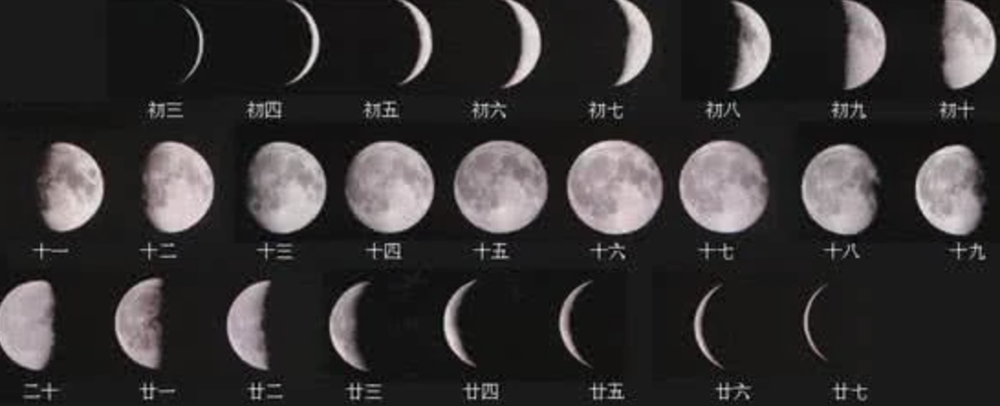

ISBN 978–1–922633–3–47
Shelley Lasica, WHEN I AM NOT THERE
49.00 AUD
Paperback, 704 pp
165 × 235 mm
Graphic Design Work Pty Ltd
U702 / 37 Swanston St, Melbourne VIC 3000
Graphic Design
ABN 94 644 530 521
Graphic Design Work Pty Ltd is a design partnership between Stuart Geddes, Žiga Testen and an expanded network of collaborators. This is the first in a series of articles dedicated to exploring our core studio practice—publication design. This one details the publication designed with and for the Australian choreographer and dancer Shelley Lasica. Lasica’s work reveals a sustained exploration of dance, movement and the varying contexts in which they can occur. The publication ‘WHEN I AM NOT THERE’ has been produced to accompany a performance-exhibition at Monash University Museum of Art (MUMA) reflecting on forty years of Lasica’s choreographic practice.
WHEN I AM NOT THERE
A see-through archive by Laura Gardner
Shelley’s piece for the MUMA exhibition, ‘WHEN I AM NOT THERE’, is a new work made up of parts of old work. The new work is a kind of archival thing—to a certain extent, though not entirely. We were interested in doing something sympathetic to that with the book. Understanding an archive in a not-strictly-archival way. Making a new thing of it. One of the things that the materiality of the book gives us is a sense of movement through the archive.
Light travels easily through the internal pages of ‘WHEN I AM NOT THERE’. The book is printed on paper with high ‘show-through’—the visibility of printing on the reverse of a sheet of paper. The stock, notable for its uniquely low opacity, is designed by book designer Irma Boom. It has the rustle of tissue paper wrapping a recent purchase and the fine, lightweight handle of a bible paper. The book’s designers Stuart Geddes and Žiga Testen sourced the gossamer paper stock for its capacity to create unexpected moments between pages, inviting light through its fibres and layering the images and text of the book, blending them together, confusing its topography.
The lightness of the pages is a metaphor for the book’s subject: the fugitivity and ephemerality of a contemporary dance practice. The book anthologises the work of dancer and choreographer Shelley Lasica and arrived in Melbourne in August 2022, coinciding with Shelley’s performance-exhibition at MUMA. As a counterpart to the performance-exhibition, the book reflectively documents Lasica’s career and work, and can also be understood as archival.

Wet-proof for ‘Shelley Lasica WHEN I AM NOT THERE’
670 × 970 mm
CMYK offset print on 60 gsm REFLEX Sixties paper
(known as IBO-1 in holland)
Folded to 330 x 242.5 mm, 2022.
We searched for months for a paper stock with the lowest possible opacity (as much ‘show-through’ as possible) eventually settling on this rare and hard to source, as well as notoriously hard to print on, paper stock. In order to make sure that the paper will reproduce the images as accurately as possible we had the printer produce this wet proof—a test printed on a sheet of the final stock and with a selection of images reproduced at scale. We often make wet proofs, usually not thinking much about the layout of the sheet but for this one, as we were preparing it, we noticed that it was slowly becoming a work of its own—a kind of single sheet overview of Shelley’s practice.
Shelley Lasica WHEN I AM NOT THERE’
First published on the occasion of the exhibition
‘Shelley Lasica WHEN I AM NOT THERE’
Monash University Museum of Art, Melbourne, 16–27 August 2022 and
Art Gallery of New South Wales, Sydney, May 2023
165 × 235 mm
704 pp + cover + jacket
176 pages printed 1+1 on Sixties 60 gsm
704 pages printed 4+4 on Sixties 60 gsm
over printed 4+0 on Materica Limestone 180 gsm
Jacket printed LED-UV 4+0 on Stucco Old Mill 200 gsm
Softcover sewn binding with cold glue
Hinge scored × 4
Jacket with flaps 10,5 cm glued to the spine
Texts by
Hannah Mathews and Lisa Catt
Shelley Lasica in conversation with Claudia La Rocco
Erin Brannigan
Robyn McKenzie
Justin Clemens
Zoe Theodore
Published by
Monash University Museum of Art,
Monash University Publishing
We would like to acknowledge and thank the publishing program of Monash University Museum of Art, which has been one of the most adventurous and dedicated initiatives in Melbourne, not only supporting the artists and their communities but also our work and the work of other independent publication designers—a rare occurrence in the otherwise highly professional, corporate and commercial design context in Australia.
We wish to thank Laura Gardner for writing the framing essay about our design approach to this publication, Matthew Stanton for the photographic documentation of the book, Kate Meakin for the video work exploring the life of the book ‘in the world’ and Jake Bonin for the production of this website. This project has been supported by Sustaining Creative Workers Initiative supported by the Victorian Government through Creative Victoria and Regional Arts Victoria.
We acknowledge the Wurundjeri people of the Kulin Nation as the sovereign custodians of the land on which we work and welcome visitors, who have cared for Country and culture over millennia, and continue to do so. We extend our respect to ancestors and Elders past and present, and to all First Nations people.
We start with the book as a focus of our applied output as well as an idea and ideal for the dissemination AND manifestation of knowledge, ideas and culture. ‘Book, school, newspaper—a reminder of the practical culture that preceded political programmes. Socialism was a craft formation before it became a mentality’ wrote Régis Debray in ‘Socialism: A Life Cycle’ (2007). Similarly the interests of our practice move from the book to pedagogy to mass media never losing sight of our principles — whether redesigning a political journal or a communication program for a restaurant our focus is on the contribution to a broader social and cultural ecosystem rather than particular private business interests.